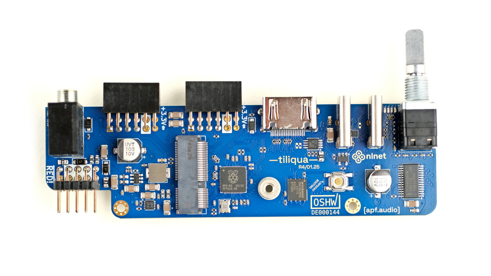
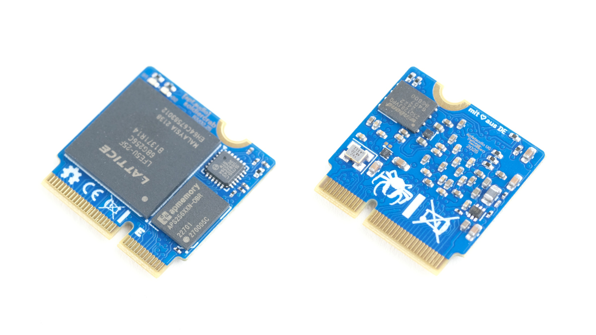
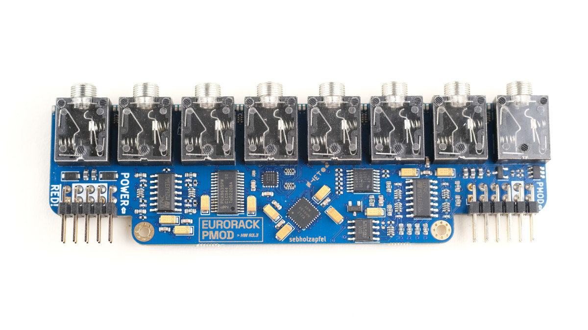

Electrical Design
Tiliqua consists of 3 PCBAs. All of these are open-hardware designs built in KiCAD and stored in separate repositories.
Block Diagram (Tiliqua R5)
Below is high-level picture of how all the different electrical components of Tiliqua are connected.
Some connections are omitted for simplicity (example: some ex0/ex1 pins are connected to both the ECP5 and RP2040, not shown).
Pinouts and schematics
Pinout information is available in ‘amaranth-boards’ format here.
Schematics for all PCBAs in the wild are plotted to PDFs here.
We now follow with a summary of the core functions of each of the Tiliqua PCBAs.
Tiliqua Motherboard (and panel)
Repository: tiliqua-hardware
{kind=link}
Rotary encoder with button and bar graph display.
RP2040-based JTAG debugger and UART bridge supported by openFPGAloader.
- Two USB ports:
dbg: USB FS for JTAG debugging.
usb2: 480Mbit/sec USB HS PHY connected to FPGA. Device, host and dual-role operation is supported on this port with a dedicated TUSB322I CC control IC and +5V VBUS switch.
- Display output for video synthesis
Maximum resolution 1280x720p/60Hz or 1920x1080p/30Hz.
2x (PMOD-compatible) expansion ports for up to 24 simultaneous audio channels.
MIDI-In jack (TRS-A standard) with optoisolation.
External PLL (SI5351A) for dynamic display resolution switching.
Soft mute for pop-free bitstream switching
FPGA SoM (soldiercrab)
Repository: soldiercrab (see README there for more detailed docs on this SoM)
{kind=link}
Lattice ECP5 (25 K) FPGA, supported by open-source FPGA toolchains
256 Mbit (32 MByte) HyperRAM / oSPI RAM (for long audio buffers or video framebuffers)
128 Mbit (16 MByte) SPI flash for user bitstreams
High-speed USB HS PHY (ULPI)
Audio Interface (eurorack-pmod R3.5)
Repository: eurorack-pmod
{kind=link}
8 (4 in + 4 out) DC-coupled audio channels, 192 KHz / 24-bit sampling
Touch and proximity sensing on all 8 audio jacks (if unused)
PWM-controlled, user-programmable red/green LEDs on each audio channel
Jack insertion detection on all 8 jacks
Built-in calibration EEPROM